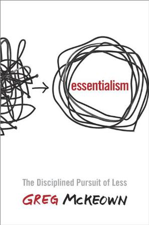

Essntialism by Greg McKeown

Essentialism is a disciplined, systematic approach for determining where our highest point of contribution lies, then making execution of those things almost effortless.
The way of the Essentialist rejects the idea that we can fit it all in. Instead it requires us to grapple with real trade-offs and make tough decisions. In many cases we can learn to make one-time decisions that make a thousand future decisions so we don’t exhaust ourselves asking the same questions again and again.
The way of the Essentialist means living by design, not by default. Instead of making choices reactively, the Essentialist deliberately distinguishes the vital few from the trivial many, eliminates the non-essentials, and then removes obstacles so the essential things have clear, smooth passage. In other words, Essentialism is a disciplined, systematic approach for determining where our highest point of contribution lies, then making execution of those things almost effortless.
If you don’t prioritise your life, someone else will.
When we don’t purposefully and deliberately choose where to focus our energies and time, other people - our bosses, our colleagues, our clients, and even our families - will choose for us, and before long we’ll have lost sight of everything that is meaningful and important. We can either make our choices deliberately or allow other people’s agendas to control our lives.
After all, there is still a feeling of sunk-cost bias: studies have found that we tend to value things we already own more highly than they are worth and thus that we find them more difficult to get rid of. If you’re not quite there, ask the killer question: “If I didn’t already own this, how much would I spend to buy it?” This usually does the trick.
Essentialists spend as much time as possible exploring, listening, debating, questioning, and thinking. But their exploration is not an end in itself. The purpose of the exploration is to discern the vital few from the trivial many.
To embrace the essence of Essentialism requires we replaces these false assumptions with three core truths: “I choose to,” “Only a few things really matter,” and “I can do anything but not everything.”
Up to that point I had always known logically that I could choose not to study law. But emotionally it had never been an option. That’s when I realised that in sacrificing my power to choose I had made a choice - a bad one. By refusing to choose “not law school,” I had chosen law school — not because I actually or actively wanted to be there, but by default. I think that’s when I first realised that when we surrender our ability to choose, something or someone else will step in to choose for us.
When we forget our ability to choose, we learn to be helpless. Drip by drip we allow our power to be taken away until we end up becoming a function of other people’s choices - or even a function of our own past choices.
The reality is, saying yes to any opportunity by definition requires saying no to several others.
The fear of missing out goes into full effect. How can we say no; the offer is right here for the taking. We might never have gone after it, but now it is so easy to get it we consider it. But if we just say yes because it is an easy reward, we run the risk of having later to say no to a more meaningful one.
Non-Essentialists say yes because of feelings of social awkwardness and pressure. They say yes automatically, without thinking, often in pursuit of the rush one gets from having pleased someone.But Essentialists know that after the rush comes the pang of regret. They know they will soon feel bullied and resentful — both at the other person and at themselves. Eventually they will wake up to the unpleasant reality that something more important must now be sacrificed to accommodate this new commitment.
The Essentialist designs a routine that makes achieving what you have identified as essential to the default position.
As you continue to clear out the wardrobe of your life, you will experience a reordering of what really matters. Life will become less about efficiently crossing off what was on your to-do list or rushing through everything on your schedule and more about changing what you put on there in the first place.